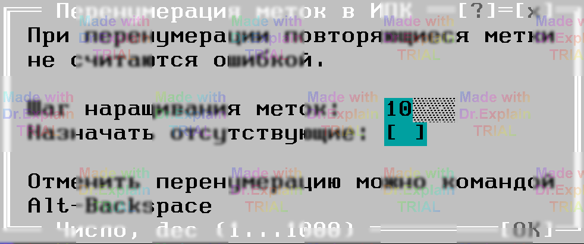

5. Перенумерация меток в программе контроля
Пункт «Перенумерация меток в ИПК» из меню Compile → Трансляция автоматически перенумеровывает все числовые метки команд в исходнике, открытом в активном окне редактора. Перед стартом выводится диалог (рис. 5.1), где нужно задать шаг нумерации и при необходимости включить опцию «Назначать отсутствующие» — она вставляет метки там, где их нет.

Во время перенумерации выполняется неполная трансляция программы: перекрёстные проверки ПК не делаются, а повторяющиеся старые метки не считаются ошибкой. Если встретились дубли, ссылка будет переписана на метку‑замену, назначенную для первого экземпляра. Будьте внимательны — после перенумерации желательна полноценная трансляция, чтобы убедиться, что все ссылки корректны.